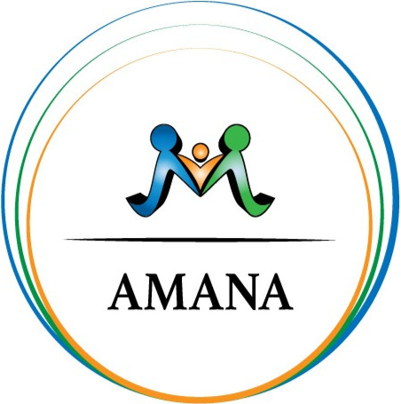

AMANA — Cours d’arabe · AdultesUne phrase nominale se compose de deux éléments : un nom défini et un mot indéfini qui dit quelque chose de lui. L’arabe ne dit pas « est » : الطَّاوِلَةُ كَبِيرَةٌ se traduit « la table est grande ». L’adjectif s’accorde avec le nom : s’il est féminin, il se termine par ة.
| Phrase | Sens |
|---|---|
| الْمِصْبَاحُ جَدِيدٌ | la lampe est neuve |
| الطَّاوِلَةُ كَبِيرَةٌ | la table est grande |
| الْخِزَانَةُ قَدِيمَةٌ | l’armoire est ancienne |
| التِّلْفَازُ صَغِيرٌ | la télévision est petite |
هَٰذَا / هَٰذِهِ suivi d’un nom indéfini signifie « c’est un… » (هَٰذِهِ طَاوِلَةٌ). Suivi d’un nom défini, il signifie « ce… » (هَٰذِهِ الطَّاوِلَةُ كَبِيرَةٌ, « cette table est grande »).
Thème : Les meubles. Page de vocabulaire de la séance.
| N° | العربية | Français | Nature |
|---|---|---|---|
| 1 | طَاوِلَةٌ | table | اسم · nom |
| 2 | خِزَانَةٌ | armoire | اسم · nom |
| 3 | مِرْآةٌ | miroir | اسم · nom |
| 4 | سِتَارَةٌ | rideau | اسم · nom |
| 5 | مِصْبَاحٌ | lampe | اسم · nom |
| 6 | وِسَادَةٌ | coussin | اسم · nom |
| 7 | ثَلَّاجَةٌ | réfrigérateur | اسم · nom |
| 8 | تِلْفَازٌ | télévision | اسم · nom |
| 9 | مِكْنَسَةٌ | balai | اسم · nom |
| 10 | فِرَاشٌ | matelas | اسم · nom |
Les exercices de ce cours sont dans la page Exercices — Cours 22.
Prochaine étape : Cours 23 →.